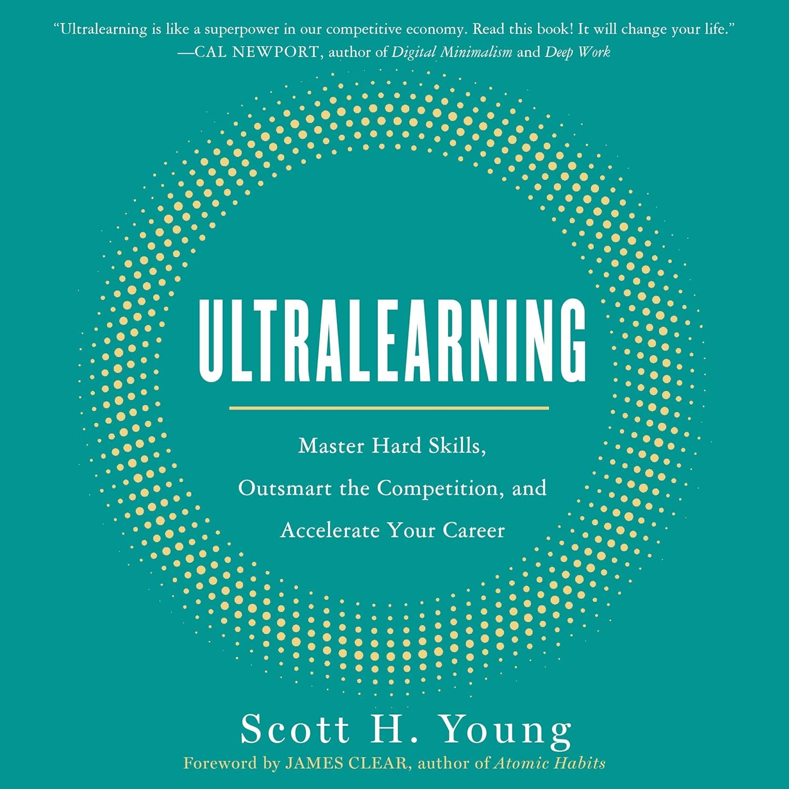
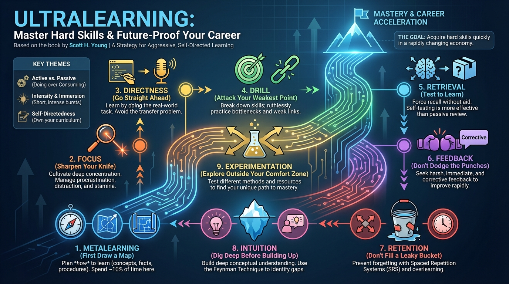

isbn-13: 9780060000000
Audible
AI Generated Content
Generated by gemini-3-pro-preview

Introduction
Ultralearning: Master Hard Skills, Outsmart the Competition, and Accelerate Your Career is a comprehensive guide to aggressive, self-directed learning. Written by Scott H. Young, the book defines “ultralearning” as a strategy for acquiring skills and knowledge that is both self-directed and intense [1]. It is designed for aggressive career advancers, polymaths, and anyone dissatisfied with the slow pace of traditional education who wants to “future-proof” their career in a rapidly changing economy. Young draws upon his own experiences, such as the “MIT Challenge” where he learned the 4-year MIT Computer Science curriculum in 12 months, and the “Year Without English,” as well as case studies of other successful ultralearners [2].
Overview of the Key Points
The core of the book revolves around nine distinct principles that can be applied to master any subject effectively [1]:
1. Metalearning (First Draw a Map)
Before diving into the material, successful ultralearners study how to learn the subject. This involves creating a roadmap by identifying the concepts to understand, facts to memorize, and procedures to practice. Young suggests spending approximately 10% of total learning time on this planning phase to ensure efficiency.
2. Focus (Sharpen Your Knife)
Deep concentration is essential for ultralearning. This principle involves managing three common obstacles: procrastination (failing to start), distraction (drifting off), and a lack of mental stamina. Cultivating the ability to focus deeply allows for longer, more productive learning sessions.
3. Directness (Go Straight Ahead)
One should learn by doing the thing they want to get good at. This avoids the “transfer” problem often seen in traditional education, where classroom learning fails to translate to real-world application. For example, if the goal is to learn a language, one should speak it; if the goal is to code, one should write software.
4. Drill (Attack Your Weakest Point)
Complex skills should be broken down into their component parts, allowing the learner to ruthlessly practice their weakest links. By isolating and improving specific bottlenecks, the overall skill improves much faster than through holistic practice alone.
5. Retrieval (Test to Learn)
Instead of passively reviewing notes, learners should force themselves to recall information without aid. Self-testing is presented as one of the most effective study methods, relying on the concept of “desirable difficulty”—the harder it is to recall information, the better it is learned.
6. Feedback (Don’t Dodge the Punches)
Ultralearners actively seek harsh, immediate feedback. Young categorizes feedback into three types: Outcome (pass/fail), Informational (what was done wrong), and Corrective (how to fix it). Seeking out informational and corrective feedback is crucial for rapid improvement.
7. Retention (Don’t Fill a Leaky Bucket)
Understanding why humans forget—due to decay or interference—is key to preventing it. Strategies to improve retention include Spaced Repetition Systems (SRS) and overlearning, which involves practicing beyond the point of initial mastery.
8. Intuition (Dig Deep Before Building Up)
Learners should aim for a deep conceptual understanding rather than just memorizing formulas or facts. The “Feynman Technique,” which involves explaining a complex concept in simple terms, is a primary method for identifying gaps in understanding and building intuition.
9. Experimentation (Explore Outside Your Comfort Zone)
While beginners follow established paths, mastery requires experimentation. Learners must eventually test different methods, resources, and styles to discover what works best for their unique cognitive profile and specific goals.
Overview of the Key Themes
The book explores several underlying themes that challenge traditional views on education and skill acquisition.
Active vs. Passive Learning
A recurring theme is the rejection of passive learning methods such as reading, highlighting, or listening to lectures. Instead, the book advocates for active engagement through drilling, testing, and doing. This shift transforms learning from a consumption activity into a production activity.
Intensity and Immersion
Young argues that learning is often most efficient when compressed into short, intense bursts rather than spread out thinly over long periods. This intensity helps maintain focus and momentum, preventing the knowledge decay that occurs with infrequent practice.
Self-Directedness
Traditional schooling often fosters dependency on teachers and curriculums. Ultralearning demands that the learner take full responsibility for their own curriculum, schedule, and standards of success. It empowers individuals to be the architects of their own education [2].
Conclusion
Ultralearning posits that in an age of rapid technological change, the ability to learn hard things quickly is a superpower. It challenges the notion that one must wait for a university or institution to provide education. Instead, by applying the nine principles of ultralearning, individuals can build their own curriculums and master any skill through aggressive, self-directed practice. While the method requires significant time and intensity, it offers a practical path for those willing to do the work to achieve mastery without formal instruction.
Further Reading
- Make It Stick: The Science of Successful Learning by Peter C. Brown et al.
- Deep Work by Cal Newport
- Mastery by Robert Greene
- The First 20 Hours by Josh Kaufman
Sources
- [1] Readingraphics. “Book Summary - Ultralearning (Scott Young).” Readingraphics, 2025. https://readingraphics.com/book-summary-ultralearning-scott-young/
- [2] Fluent in 3 Months. “An In-Depth Review of ‘Ultralearning’ by Scott H. Young.” Fluent in 3 Months, 2025. https://www.fluentin3months.com/reviews/how-to-learn/
- [3] AbeBooks. “Ultralearning by Scott H Young.” AbeBooks, 2025. https://www.abebooks.com/servlet/SearchResults?kn=Ultralearning%20by%20Scott%20H.%20Young